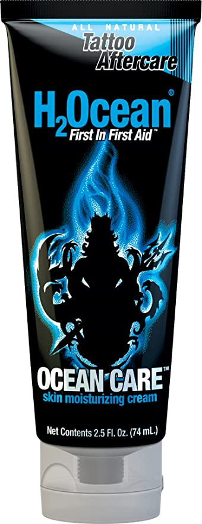

TATTOO AFTERCARE INSTRUCTIONS
Your tattoo was carefully created by a proffessional. To ensure a top quality tattoo, the rest is up to you. Please strictly follow these simple aftercare instructions for the healing process of this tattoo to ensure maximum results and to avoid any infection or permanant damage.
-
Remove bandage within a couple hours, and wash with warm water and soap
Pat dry with clean paper towel, and apply a thin film of "Tattoo Care Butter" or
"Tattoo Care Lotion", remove any excess with clean, dry paper towel.
-
Wash tattoo twice daily while healing and use "Tattoo Care Butter" or "Tattoo
Care Lotion", as needed to prevent dryness. It is fine to wash in the shower or tub,
but do not allow to soak.
-
Do not pick or scratch any scabbing, allow it to come off on its own. Scabbing
usually flakes off in 7-10 days. Keep clean and continue to use butter or lotion until
healed. Wear clean, loose clothing to protect tattoo while healing.
-
DO NOT expose healing tattoo to sun, swimming, hot tub, unclean conditions,
irritating clothing, or anything that may hinder healing.
-
Once tattoo is healed, use high SPF sunblock when exposed to sun.
